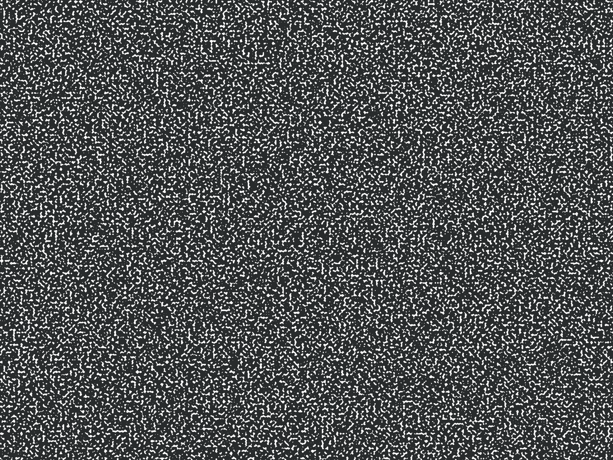
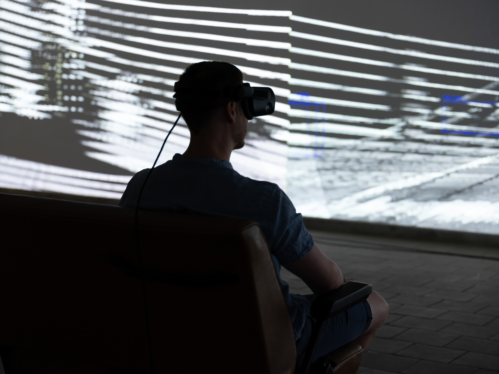
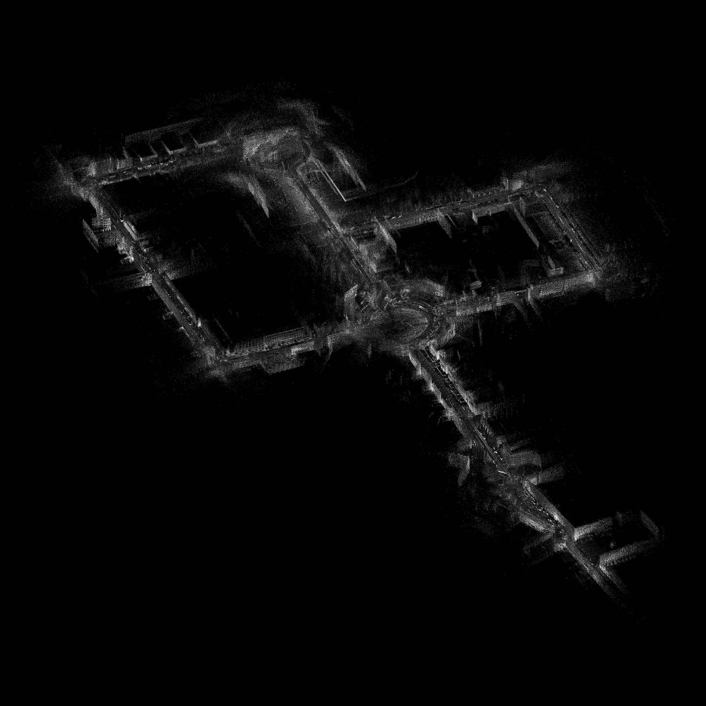
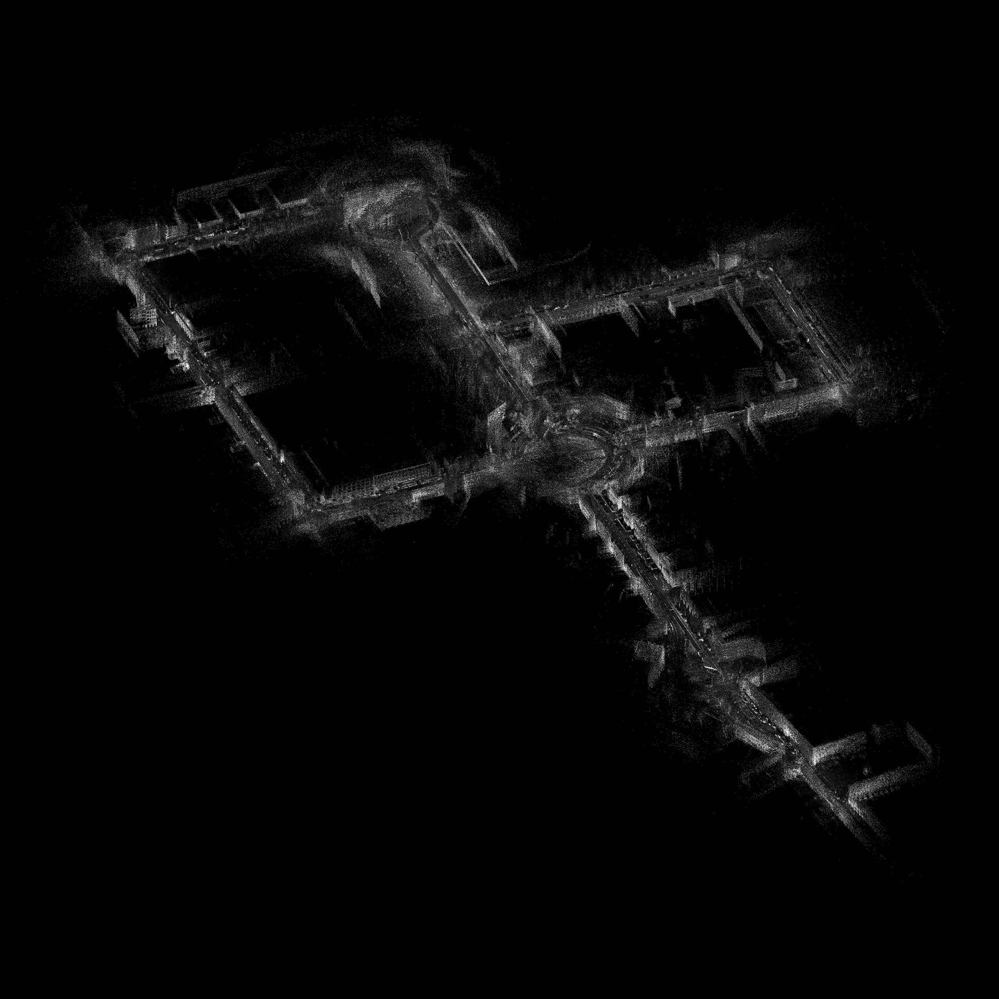
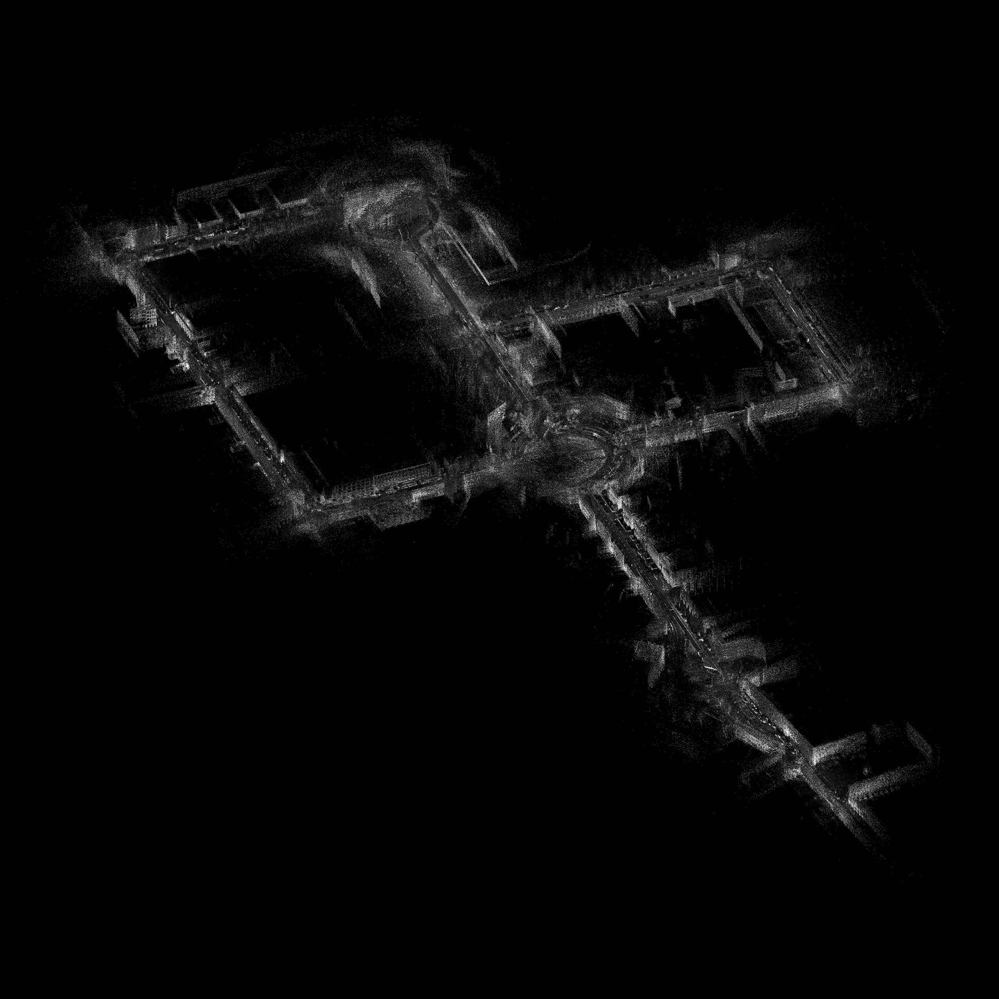

AUTO-NOM
Ich sehe was, das du nicht siehst
In der VR-Erfahrung AUTO-NOM. Ich sehe was, das du nicht siehst von Leon Döring und Moritz Gnann, werden die scheinbar unendlich großen Datenmengen, die ein selbstfahrendes Automobil in kürzester Zeit automatisiert sammelt und in Echtzeit verarbeitet, untersucht. Anhand eines über das Internet frei verfügbaren 2,3 Terabyte großen Datensatzes von Sensorinformationen eines Audi-Testfahrzeuges (Audi Autonomous Driving Dataset A2D2, 2020) wird in dieser Anwendung mit Hilfe von VR-Technik diesen gleichzeitig hochpräzisen und dennoch überraschend spekulativen Blick auf die Stadt für das menschliche Auge sichtbar gemacht. Anhand einer ca. 15 minütigen Testfahrt durch die Münchner Innenstadt werden Daten aus unterschiedlichen Sensorsystemen visuell aufgearbeitet. Auf einer Autositzbank sitzend können die dynamischen 3D-Daten entweder frei per VR-Brille oder über eine dreifache Videoprojektion im Galerieraum betrachtet werden. Die zur Entscheidungsfindung des Autos zentrale Erkennung der Umgebungs-Objekte (Fußgänger, Lastwagen, Fahrrad, Ampel usw.), ausgedrückt als prozentuale Wahrscheinlichkeiten, werden ebenso in den Betrachtungsraum eingeblendet. Weiterhin werden nicht optische Informationen wie Beschleunigungswerte oder Lenkwinkel in Klangmuster umgerechnet, die die virtuelle Bewegung des PKW durch München raumfüllend unterstützen.



 


Meine Aufgabe in dieser Arbeit war es die von Leon Döring für mich aufgearbeiteten Sensordaten visuell in VR darzustellen. Dabei ging es vorallem darum, die Punktwolken, welche durch die Lidar-Laserscanner entstehen, in Echtzeit in VR darzustellen. Jede Punktwolke besteht aus ca. 200 000 Punkten und ändert sich 30 Mal in der Sekunde, was bei einer 15 minütigen Testfahrt ca. 27 000 Punktwolken bedeutet.
Dafür habe ich die Positionskoordinaten und Helligkeitswerte der einzelnen Punkte in HDR Farbinformationen umgewandelt und als einzelne Pixel in einer .exr Bilddatei exportiert (siehe Bild unten). Diese Farbinformationen können dann in Unitys Vfx-Graphen eingelesen werden und wieder zu Positionsdaten umgewandelt werden, mit welchen dann die einzelnen Punkte durch den Vfx-Graphen gesetzt werden können. Mit einer Animation dieser enstanden .exr Bilddateien können so die Punktwolken, ohne viel Rechenleistung, in VR dargestellt werden.
.jpg)